地政学
エルサレムはイスラエルの行政中枢であり、東エルサレムを含む帰属をめぐって国際的な争点でもあります。聖地、境界、入植、治安、外交承認が街路に重なり、丘の住宅地や検問、道路の配置まで政治を帯びる都市です。

🇮🇱 イスラエル・パレスチナ / 西アジア / World City Atlas
石灰岩の丘に、ユダヤ教、キリスト教、イスラムの聖地、政治境界、巡礼、観光、生活の市場、記憶と衝突が重なる都市です。
都市の骨格
エルサレムは、旧市街の城壁、神殿の丘、聖墳墓教会、嘆きの壁、アルアクサー周辺、東西の住宅地、丘上の道路が、宗教と政治と日常を密接に結びます。
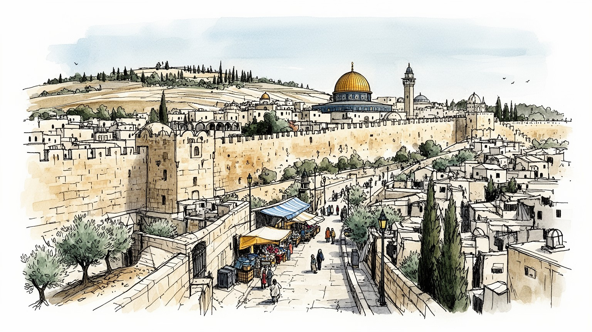
エルサレムはイスラエルの行政中枢であり、東エルサレムを含む帰属をめぐって国際的な争点でもあります。聖地、境界、入植、治安、外交承認が街路に重なり、丘の住宅地や検問、道路の配置まで政治を帯びる都市です。
行政、教育、医療、宗教施設、観光、博物館、小売、建設、清掃、警備が雇用を作ります。市場の店主、宿、バス運転手、家事労働者、学生のアルバイトも都市を支え、所得差と移動制限が暮らしを分けます。夜も働きます。
ユダヤ教、キリスト教、イスラムの暦、祈り、断食、祭礼、巡礼が都市の時間を刻みます。言葉、歌、市場の食、サッカー観戦が混ざり、祈りの近さは共存と緊張を生みます。街角の音も夜までさらに深く重なります。
観光客は旧市街、聖地、博物館、丘の眺望を歩きますが、住民には家賃、学校、医療、交通、治安、許可、宗教規範が日々の条件です。市場、台所、通学、介護、夜の店が名所の足元に続きます。世代も日々交わります。
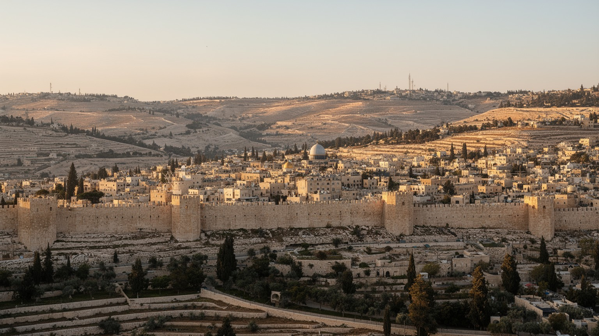
エルサレムの読み方は、まず旧市街を囲む城壁と、その外側を削る谷、東西へ伸びる丘陵から始まります。わずかな範囲にユダヤ人地区、ムスリム地区、キリスト教徒地区、アルメニア人地区が接し、門、坂、階段、市場の通路が宗教と生活を細かく分けながら結んでいます。神殿の丘を見上げる位置、オリーブ山から旧市街を望む視線、キドロン谷やヒンノム谷の深さは、地図上の距離以上に心理的な境界を作ります。石灰岩の白い建物は統一感を与えますが、その下では所有、通行、礼拝、発掘、保存、警備をめぐる判断が絶えず更新されます。丘の都市であるため、少し歩くだけで眺めと支配の感覚が変わります。門をくぐることは観光の所作であると同時に、誰がどの時間に、どの道を通れるかという政治的な経験でもあります。旧市街の密度は、建築の古さだけでなく、限られた空間に記憶、信仰、商い、住居、治安が押し込められている点にあります。地形を読むと、エルサレムが広域の国際問題でありながら、曲がり角一つの使い方にまで意味が宿る都市だと分かります。朝夕の光が石壁の色を変え、同じ坂道が巡礼路、通学路、搬入路、警備線に変わるため、都市の姿は時間帯によっても読み替えられます。小さな段差や門前の広場にも、長い歴史と現在の生活が同時に集まっています。そこに地理の力があります。
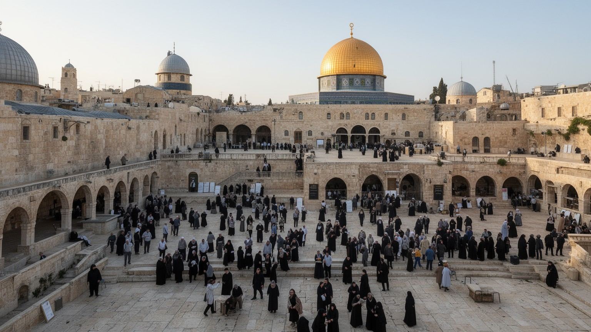
エルサレムは、ユダヤ教、キリスト教、イスラムにとって別々の意味を持ちながら、同じ都市空間を共有する聖地です。嘆きの壁は古代神殿への記憶と祈りを集め、聖墳墓教会は受難、死、復活の物語を世界の巡礼者に結びます。アルアクサー・モスクと岩のドームは、イスラムの信仰と歴史的支配の記憶を担い、周辺の広場と門は日常の礼拝者の動線でもあります。聖地は遠くから憧れられる象徴である一方、管理権、入場時間、警備、発掘、修復、宗教共同体間の取り決めによって毎日運営されます。祈る人、案内人、修道士、ラビ、イマーム、店主、警官、清掃員が、同じ石畳の上で役割を果たします。宗教的な近さは対話の可能性を生むと同時に、わずかな変更が緊張を高める脆さも持ちます。聖地を単なる名所として見ると、信者が背負う記憶の深さも、管理の細部が社会全体へ波及する力も見落とします。エルサレムでは祈りの場所が都市の中心にあり、世界のニュース、家族の巡礼、近所の買い物が同じ通路で交差します。その重なりが、この都市を特別で扱いにくい場所にしています。礼拝の順番、祭日の混雑、服装や音への配慮は、観光客にも住民にも求められます。聖なる空間は静止した背景ではなく、信仰の尊厳、共同体の記憶、都市の安全を同時に守るために絶えず調整される場です。ここに重みがあります。
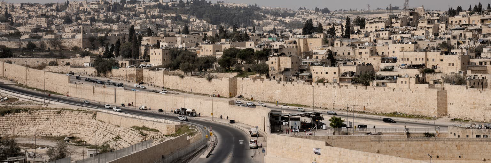
エルサレムの政治的位置は、都市の見方を最も難しくします。イスラエルはエルサレムを首都として国会、官庁、最高裁、記念施設を置いていますが、東エルサレムの地位は国際的に争われ、パレスチナ側も将来の首都として重視しています。境界は一本の線ではなく、住宅開発、行政サービス、身分証、建築許可、道路、検問、警備、学校制度として日常に現れます。西側の官庁街と博物館、東側のパレスチナ人地区、旧市街の聖地、周辺の入植地や分離壁を重ねて見ると、政治は地図の色分けでは足りないことが分かります。誰が住民として扱われ、どこに家を建てられ、どの病院や学校へ行けるかは、都市の経験を大きく分けます。国際外交では大使館の位置や承認が注目されますが、住民にとってはごみ収集、道路補修、通学時間、警察との接触が政治の顔です。エルサレムは国家の象徴であるほど、住民の生活が象徴に押しつぶされやすい都市でもあります。政治境界を読むことは、歴史的主張の勝敗を数えることではなく、制度が街路と家族の毎日にどう届くかを見ることです。その視点なしに、この都市の緊張は理解できません。さらに行政区の数字や地図だけでは、親族を訪ねる道、仕事へ向かうバス、救急車の経路に生じる差は見えません。都市の分断は大きな外交問題である前に、日々の待ち時間と不安として住民の身体に刻まれています。
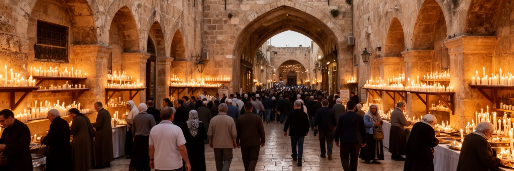
エルサレムの時間は、宗教暦によって何度も組み替えられます。ユダヤ教の安息日や過越祭、キリスト教の復活祭や聖週間、イスラムのラマダンや金曜礼拝は、店の開閉、交通、家族の食事、警備、観光客の流れを変えます。巡礼者は世界各地から来て、聖墳墓教会、ヴィア・ドロローサ、嘆きの壁、神殿の丘周辺、オリーブ山を歩きますが、その道は住民の通学路や市場への道でもあります。礼拝が増える時期には、宿泊、飲食、清掃、案内、警備、救急の仕事も増えます。宗教行事は精神的な経験であると同時に、都市運営の大きな負荷です。祈りの高まりは連帯を生みますが、群衆管理や入場制限が不信を強めることもあります。エルサレムでは、祭礼の鐘、礼拝の呼びかけ、ヘブライ語の祈り、巡礼団の歌が近い距離で響きます。その音の重なりは美しくもあり、敏感な政治的意味を帯びてもいます。巡礼と儀礼を読むには、聖なる瞬間だけでなく、行列を誘導する人、飲み水を売る店、足の悪い高齢者を支える家族、混雑を避ける住民の判断を見る必要があります。信仰は都市を動かす力であり、生活の調整でもあります。祭りの後には清掃が入り、宿の台帳が埋まり、家族は帰路の交通を心配します。聖なる高揚と実務の積み重ねが同時にあるからこそ、巡礼都市の現実は厚みを持ちます。その厚みは毎年更新されます。
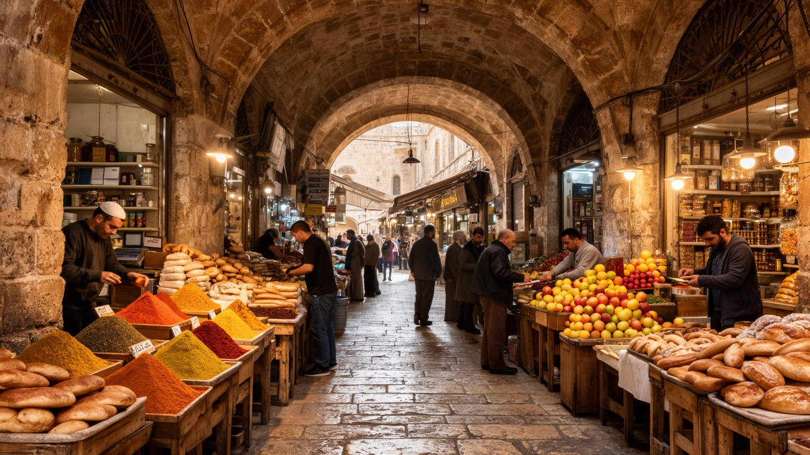
エルサレムの経済は、聖地の象徴性だけでなく、市場、食堂、宿泊、教育、医療、行政、建設、清掃、警備の労働で成り立っています。旧市街のスークでは香辛料、パン、布、土産物、宗教用品、日用品が並び、店主は観光客、巡礼者、近所の住民を相手に言語と価格を使い分けます。西側のマハネ・イェフダ市場では野菜、菓子、ハラ、フムス、コーヒー、夜の飲食店が混ざり、昼の買い物と若者の夜遊びが同じ通路で入れ替わります。観光が増えれば収入は生まれますが、治安悪化や国際情勢で客足は急に変わります。市場を支えるのは、早朝の搬入、パン焼き、掃除、配送、警備、会計、店番、修理のような目立たない仕事です。パレスチナ人労働者、超正統派の低所得世帯、移民労働者、学生、観光業の若者は、それぞれ違う条件で都市経済に参加します。所得差、移動許可、言語、宗教規範は、働ける場所と時間を分けます。エルサレムの市場は古い景観ではなく、政治の緊張、物価、家計、巡礼の波を直接受ける現役の生活装置です。買い物袋の中身や店の営業時間を追うと、聖地都市の足元にある労働の厚みが見えてきます。値段交渉の声、焼きたてのパンを運ぶ手、コーヒーとザアタルの匂い、警備員の視線は、観光の華やかさの下にある家計の計算を示します。夜のシャッター音も都市経済の一部です。
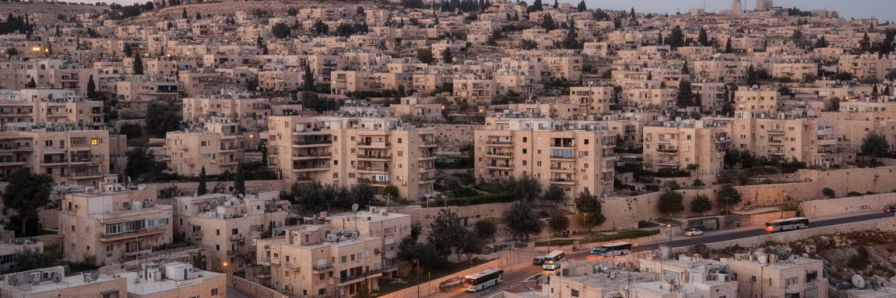
エルサレムの暮らしは、どの丘のどの地区に住むかで大きく変わります。西エルサレムの住宅地、超正統派の密集地区、東エルサレムのパレスチナ人地区、旧市街の住居、周辺の入植地は、近い距離にありながら学校、交通、商店、宗教施設、行政サービスの使い方が異なります。住宅は単なる建物ではなく、身分、家族、宗教規範、政治的地位、所得を映す場所です。建築許可が得にくい地区では増築や修理が難しく、人口増加に住宅供給が追いつかないことがあります。一方で新しい住宅開発は道路と警備を伴い、周辺の地形と移動を変えます。家賃や購入価格は高く、若い家族は通勤時間、学校選択、親族の近さ、宗教共同体との距離を考えながら住まいを決めます。超正統派地区では大家族、宗教教育、安息日の公共空間が日常を形づくり、パレスチナ人地区では行政手続きやインフラ格差が生活の負担になります。観光客が見る石の街並みの内側には、台所、洗濯、介護、子育て、隣人関係があります。夕方の遊び場、学校帰りの制服、坂を上る高齢者、安息日前の買い物列は、聖地都市を生活の場所へ戻します。建物の外観が似ていても、上下水道、道路幅、公園、学校までの安全な道には差があります。近隣のつながりは支えにもなりますが、宗教や政治の線を越えた移動を難しくする壁にもなります。住まいは都市の分断を最も身近に感じる場所です。
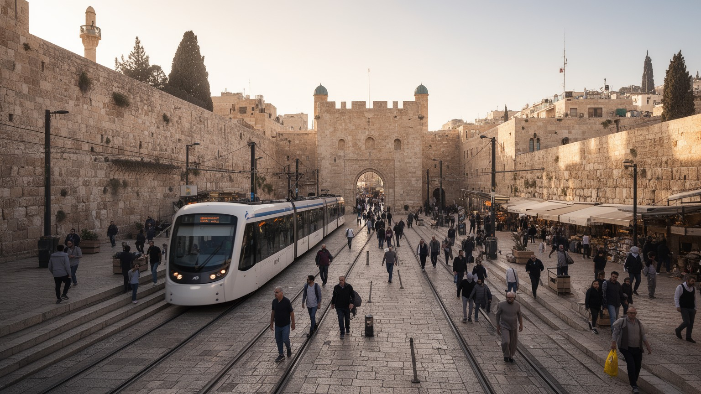
エルサレムの移動は、旧市街の門から現代のライトレール、バス、幹線道路、検問まで、都市の境界を実感させます。ヤッフォ門、ダマスカス門、シオン門、ライオン門は観光の入口であると同時に、商人、礼拝者、学生、警備の動線が集中する場所です。坂の多い街では歩く速度も地区の距離感も地形に左右されます。ライトレールは西側の住宅地、中心部、旧市街近く、北東方面を結び、通勤と観光を便利にしましたが、路線が通る場所自体が政治的な議論を呼びます。バス網はユダヤ系地区とパレスチナ人地区で利用の感覚が異なり、検問や道路の迂回は移動時間を大きく変えます。安息日には公共交通や商店の動きが制限される地区もあり、宗教規範が移動のリズムを作ります。観光客には短い距離に見える道でも、住民にとっては許可、警備、混雑、家族の送迎が絡む複雑な選択です。交通を読むと、エルサレムが単に丘の上にある美しい街ではなく、誰を速く結び、誰を遠回りさせるかが制度と地形で決まる都市だと分かります。門は過去の遺物ではなく、現在も人の流れと緊張を集める結節点です。朝の通勤、礼拝前の混雑、サッカーやバスケットの試合へ向かう若者、観光バスの停車、救急車の通行は同じ道路を奪い合います。車輪の軋み、車内放送、坂道の息遣いにも生活の差が表れます。停留所で待つ高齢者の姿も見えます。
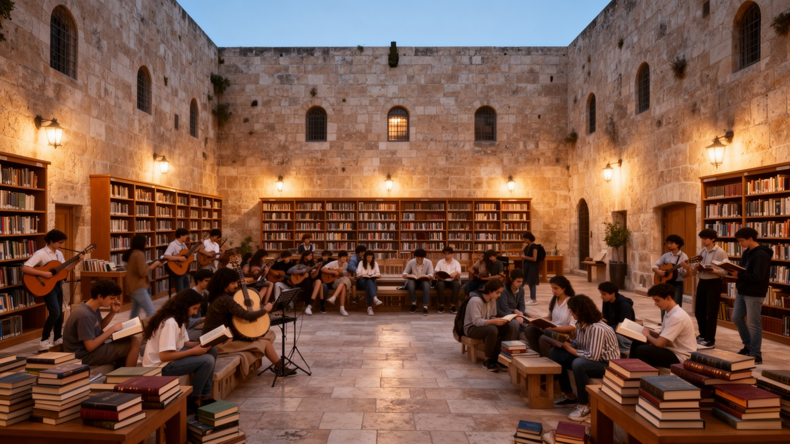
エルサレムは宗教都市であると同時に、大学、神学校、研究所、博物館、図書館、記念施設が集まる学びの都市です。ヘブライ大学、宗教学校、聖書研究、考古学、イスラム学、キリスト教神学、ホロコースト記憶、アルメニア共同体の歴史、パレスチナ文化研究が、それぞれ異なる視点から都市を読み直します。博物館や記念館は国家の物語を伝える場であり、同時に個人の喪失や共同体の記憶を保存する場でもあります。言語も重要です。ヘブライ語、アラビア語、英語、ロシア語、イディッシュ語、アルメニア語、巡礼者の多様な言葉が、学校、店、礼拝所、案内板、ラジオや新聞に現れます。文化は祭りや音楽だけでなく、どの記憶を教え、どの地名を使い、どの遺跡を発掘し、どの物語を展示するかという選択です。学生、研究者、修道者、ラビ、イマーム、ガイド、通訳、保存修復の職人が、都市の知的な厚みを支えます。夜の小劇場、室内楽、宗教歌、若者のカフェ、学校対抗のスポーツも、聖地の厳粛さとは別の都市文化を作ります。エルサレムでは学びが中立的な作業に見えても、土地、信仰、国家、亡命、喪失に触れます。教室や展示室の外では、書店、聖具店、音楽会、家族の食卓が知識を別の形で伝えます。文化の厚みは公式施設だけでなく、日々の言葉遣いと記憶の手渡しにも宿っています。学生の議論も街の声です。
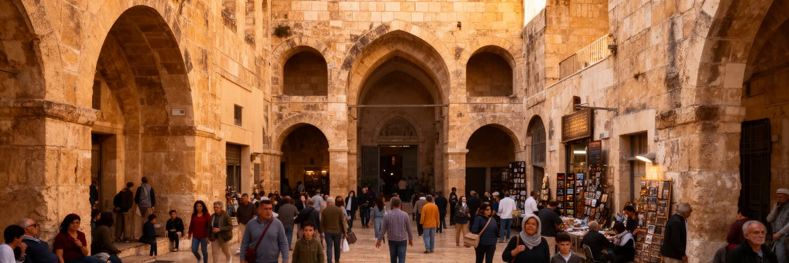
エルサレム観光は、旧市街の城壁、嘆きの壁、聖墳墓教会、岩のドーム周辺、ヴィア・ドロローサ、オリーブ山、ヤド・ヴァシェム、イスラエル博物館、マハネ・イェフダ市場へ人を引き寄せます。これらは世界的な名所ですが、観光は記念写真だけでは成り立ちません。入場制限、礼拝時間、服装、警備、修復、混雑、ガイドの説明、土産物店、巡礼団の大型バスが、遺産の使われ方を変えます。観光収入は宿泊、飲食、交通、小売、通訳、清掃、警備に広がりますが、政治的緊張や暴力の報道で急に落ち込む脆さもあります。名所の周辺には住民の家、学校、祈りの場所、仕入れの道があり、観光客の流れは生活空間を圧迫することもあります。遺産を守るとは、石造りの建物を保存するだけでなく、礼拝者が使い、住民が暮らし、働く人が収入を得られる条件を整えることです。エルサレムでは、過去をどう説明するかが現在の政治と直結します。だから観光は中立の消費ではなく、どの物語を聞き、どの場所で沈黙し、誰の日常に足を踏み入れているかを考える行為でもあります。遺産の価値は、世界の記憶と住民の生活がどこまで共存できるかにかかっています。早朝の静かな祈り、昼の団体客、夕方の市場の混雑は同じ地区で連続します。観光を深く見るほど、名所の背後にある労働、信仰、近隣生活を尊重する必要が見えてきます。
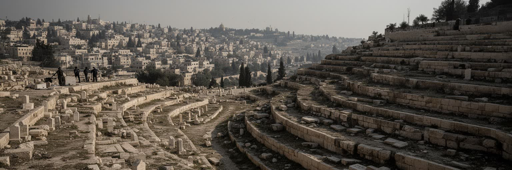
エルサレムでは、衝突の記憶が地名、記念碑、墓地、学校教育、家族の語り、警備の配置に残っています。古代から近現代までの支配の交代、戦争、追放、避難、占領、テロ、暴動、和平交渉の挫折は、共同体ごとに異なる痛みとして記憶されます。同じ場所が、ある人には解放の象徴であり、別の人には喪失の記憶であることがあります。旧市街の門、分離壁、検問、記念館、墓地、破壊された家の話は、都市の景観に説明しきれない重さを与えます。記憶は過去を保存するだけでなく、現在の行動を方向づけます。警備が強まる時期、宗教行事の混雑、政治的発言、住宅建設の発表は、過去の経験を呼び起こし、住民の不安を高めます。一方で、医療、商売、学校、文化活動、共同の職場では、緊張の中でも日常を続ける関係が生まれます。衝突を読むとき、都市を単純な対立図に閉じ込めると、そこで暮らす人の複雑な選択を見落とします。記憶は和解を難しくする力であると同時に、他者の痛みを理解する入口にもなります。エルサレムの街路には、勝利の物語だけでなく、沈黙、恐れ、忍耐、仕事を続ける意思が刻まれています。家庭の写真、墓参、記念日の沈黙、ニュースを聞く食卓も、都市の記憶を作ります。衝突の歴史を読むほど、日常を保とうとする小さな行為の重みが見えてきます。その重みを見失えません。
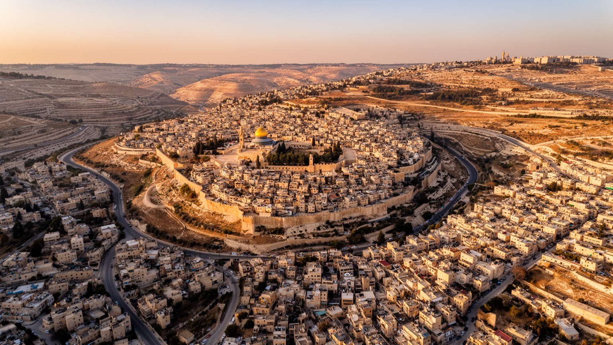
エルサレムを世界都市として読む理由は、人口やGDPの大きさではありません。むしろ限られた丘の都市に、三つの宗教の聖地、イスラエルの行政機能、パレスチナの政治的希望、国際外交、巡礼、観光、考古学、記憶の教育、日常の市場と住宅が極端な密度で集まる点にあります。ニューヨークや東京のような巨大経済とは違い、エルサレムの力は象徴が現実の街路を動かすことにあります。遠い国の信者が祈り、各国政府が発言し、研究者が遺跡を調べ、住民がバスに乗り、店主がパンを売る。その一つ一つが、世界史と現在の生活を接続します。宗教を見れば政治が見え、政治を見れば住宅が見え、住宅を見れば労働と移動の不平等が見えます。エルサレムを理解するには、どちらか一方の物語に寄りかかるのではなく、同じ石の上に複数の記憶が置かれていることを認める必要があります。世界都市としての重要性は、金融額ではなく、世界中の人びとが自分の歴史、信仰、傷、希望をこの都市に結びつけている事実から生まれます。その重さを日常の市場や通学路まで降ろして読むと、エルサレムは遠い聖地ではなく、暮らしを抱えた現代都市として見えてきます。世界が注視する場所であっても、住民の一日は朝食、通勤、授業、祈り、買い物、家族の会話でできています。象徴と生活を同時に読むことが、この都市を平板な争点にしないための条件です。